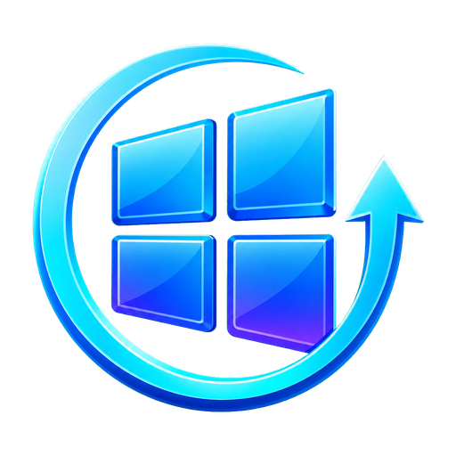

Installer des logiciels
Choisissez plusieurs applications et lancez une installation groupée.
Catalogue officiel →
PC SetupWindows maintenance ↓ TéléchargerInstallez vos logiciels essentiels, mettez à jour vos applications et libérez de l’espace depuis une seule interface claire.
PC Setup s’appuie sur les outils Windows et les sources des éditeurs.
Choisissez plusieurs applications et lancez une installation groupée.
Catalogue officiel →Comparez les versions et choisissez précisément les applications à actualiser.
Aperçu avant installation →Temporaires, caches, Corbeille et anciens composants sélectionnés.
Nettoyage contrôlé →Restaurez les anciens dossiers ou confirmez leur suppression définitive.
Récupération intégrée →Mode simulation : aucune modification ne sera effectuée sur cet ordinateur.
Cliquez sur une carte pour l’ajouter.
Applications, composants et pilotes.
Sélectionnez les zones à nettoyer.
i Cette démo reproduit l’expérience visuelle. Les actions système sont uniquement disponibles dans l’application Windows.
Le tableau de santé analyse localement le disque, les versions disponibles et le redémarrage Windows. Chaque opération sensible reste confirmée avant son lancement.
Non. Toutes les actions du site sont simulées. Seule l’application Windows téléchargée peut lancer les opérations système après votre confirmation.
PC Setup nécessite les droits administrateur pour installer des logiciels, utiliser Windows Update et nettoyer certaines zones protégées.
Non. Le nettoyage protège vos documents et le dossier Téléchargements. La Corbeille n’est vidée que si vous la sélectionnez explicitement.
Elle affiche les anciens dossiers déplacés pendant le nettoyage. Vous pouvez les restaurer à leur emplacement AppData d’origine ou confirmer leur suppression définitive.